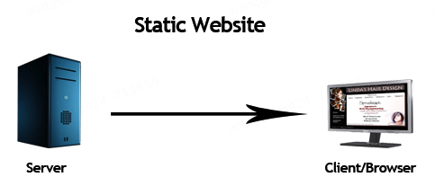
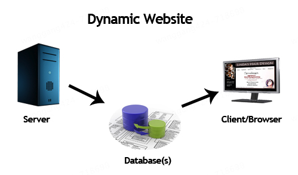
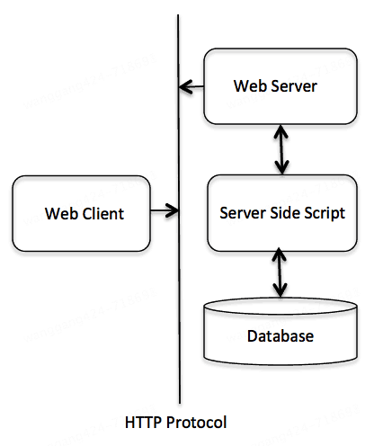
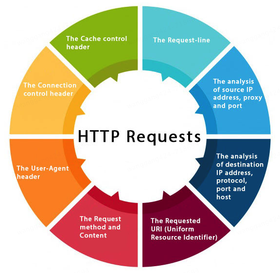
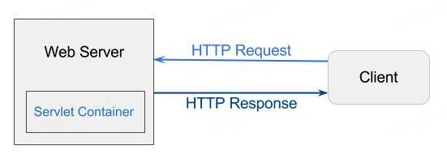

7 个 Web 术语
-
Website: static vs dynamic
-
HTTP
-
HTTP Requests
-
GET vs POST
-
Servlet Container
-
Server: Web vs Application
-
Content Type
Website: static vs dynamic
网站内容包括文本、图片、音频、视频，通过 URL 来访问。网站分为静态网站和动态网站。
静态网站

静态网站是用 HTML 编写的，所有内容都包含在网页内，就像是打印出来的一样。
动态网站

动态网站分为客户端和服务端，内容是可以动态变化的，可以根据用户请求动态更新网页内容。服务端语言有 Servlet、ASP.NET 等。
HTTP

HTTP 是 Hypertext Transfer Protocol 缩写，超文本传输协议，位于 OSI 网络分层模型的应用层（第七层）。
超文本（Hypertext）是一种文本形式，它不仅包含普通的文本内容，还包含了可以链接到其他文本或资源的元素。这些链接通常称为“超链接”（Hyperlinks）。超文本的概念由 Ted Nelson 在 1960 年代提出，并在万维网（World Wide Web）的发展中得到了广泛应用。
HTTP 具有以下特点：
-
media independent：支持任何类型的媒体内容
-
connectionless：无连接，客户端发送请求后，就断开了连接
-
stateless：无状态，服务端不会保留客户端请求的状态，不知道谁是谁
HTTP 是基于 TCP/IP 协议的，通过 TCP 建立可靠连接。为什么说 HTTP 是无连接的，但又是基于 TCP 可靠连接的？如果想要可靠地传输数据，那么就必须要有稳定可靠的连接，保证数据不丢失，这个连接就是 TCP 连接。HTTP 正是通过 TCP 连接来发送和接收数据的。
在 HTTP/1.0 中，每次请求都会建立一个新的 TCP 连接，完成请求后立即关闭连接。在 HTTP/1.1 中，引入了持久连接，允许多个请求/响应在同一个 TCP 连接上进行，但每个请求/响应对话仍然是独立的。HTTP/1.1 是持久连接，那么还能叫做无连接吗？是的，仍然是无连接。持久连接是通过 Connection: keep-alive 头部实现的，允许连接在一段时间内保持打开状态，不需要重新建立和关闭连接。无连接的本质是每个请求/响应对话都是独立的，强调的是独立。
HTTP Requests
HTTP 请求是客户端发送给服务端的请求，包含以下内容：

- The Request-line（请求行）
- The analysis of source IP address, proxy and port（源信息）
- The analysis of destination IP address, protocol, port and host（目标信息）
- The Requested URI (Uniform Resource Identifier)（链接）
- The Request method and Content（方法和内容）
- The User-Agent header（请求头）
- The Connection control header（请求头）
- The Cache control header（请求头）
可以在浏览器中通过 F12 开发者工具，查看 HTTP 请求信息。
GET vs POST
GET 和 POST 是 HTTP 请求的 2 个主要方法，它们的区别如下：
- 数据传输方式
- GET：将请求参数附加在 URL 的查询字符串中，数据通过 URL 传输。例如：
http://example.com/page?param1=value1¶m2=value2 - POST：将请求参数包含在请求体中，数据通过请求体传输，不会显示在 URL 中
- 安全性
- GET：由于参数显示在 URL 中，敏感信息容易被暴露在浏览器历史记录、日志文件等地方，因此不适合传输敏感数据
- POST：参数在请求体中传输，相对来说更安全，但并不意味着完全安全，仍需使用 HTTPS 来加密数据
- 数据长度限制
- GET：由于 URL 长度限制（通常为 2048 字符），GET 请求传输的数据量有限
- POST：没有明显的数据长度限制，可以传输大量数据
- 幂等性
- GET：幂等的，即多次相同的 GET 请求应该产生相同的结果，不会对服务器资源产生副作用
- POST：非幂等的，即多次相同的 POST 请求可能会产生不同的结果，通常用于提交数据或触发服务器上的操作
- 缓存
- GET：可以被浏览器缓存，适合用于获取不变的数据
- POST：默认情况下不会被缓存，适合用于提交数据或执行操作
- 用途
- GET：主要用于请求数据，例如获取网页内容、查询信息等
- POST：主要用于提交数据，例如提交表单、上传文件等
Servlet Container

Servlet 容器（Servlet Container）是一个运行环境，用于管理和执行 Java Servlet。它属于 Java EE，负责处理客户端请求、管理 Servlet 生命周期以及提供各种服务（如安全性、并发性、资源管理等）。
Servlet 容器是 Web 服务器（Web Server）的一部分，我们常说的 Apache Tomcat，既是一个 Web 服务器（内置 HTTP Server），也是一个 Servlet 容器。它能够处理静态内容和动态内容，提供了一个完整的运行环境来开发和部署 Java Web 应用。
Server: Web vs Application
Web 服务器主要处理静态内容和 HTTP 请求，而应用服务器主要处理动态内容和业务逻辑。
传统的 Web 服务器：
- Apache HTTP Server：一个开源的 Web 服务器，广泛用于托管静态网站和动态 Web 应用
- Nginx：一个高性能的 Web 服务器，特别擅长处理大量并发连接，常用于反向代理和负载均衡
现代的 Web 服务器：
- Node.js：一个基于 Chrome V8 引擎的 JavaScript 运行时环境，使用事件驱动、非阻塞 I/O 模型，使其非常适合构建高性能、可扩展的网络应用
- Caddy：一个现代的 Web 服务器，默认支持 HTTPS，配置简单，支持自动 TLS 证书管理
应用服务器：
- Apache Tomcat：虽然主要是一个 Servlet 容器，但也可以作为一个轻量级的应用服务器
- GlassFish：一个完整的 Java EE 应用服务器，支持所有 Java EE 规范
- JBoss/WildFly：一个开源的 Java EE 应用服务器，提供全面的企业级功能
- WebLogic：Oracle 提供的企业级应用服务器，支持广泛的企业功能
- WebSphere：IBM 提供的企业级应用服务器，广泛用于大型企业应用
在实际应用中，Web 服务器和应用服务器通常会一起使用，比如：
-
Nginx 作为前端 Web 服务器，处理静态内容，将动态请求转发给后端的 Tomcat 应用服务器处理
-
Nginx 作为反向代理，接收所有请求，并根据请求类型进行处理或转发，给后端的应用服务器 Tomcat，同时可以实现负载均衡
Servlet 容器既可以是 Web 服务器的一部分，例如，Apache Tomcat 就是一个既包含 Web 服务器功能又包含 Servlet 容器功能的服务器。Tomcat 能够处理静态内容（如 HTML、CSS、JavaScript 文件）和动态内容（如通过 Servlet 生成的内容）。
Servlet 容器也可以是应用服务器的一部分，例如，在企业级应用服务器（如 GlassFish、JBoss/WildFly）中，应用服务器不仅包含 Servlet 容器，还提供了许多其他企业级功能，如事务管理、消息队列、EJB（Enterprise JavaBeans）支持等。
+----------------------+ +----------------------+
| Web Server | | Application Server |
| | | |
| +------------------+ | | +------------------+ |
| | Servlet Container| | | | Servlet Container| |
| | (Tomcat) | | | | (GlassFish, | |
| +------------------+ | | | JBoss/WildFly) | |
| | | +------------------+ |
+----------------------+ | |
| +------------------+ |
| | Other Enterprise | |
| | Features (EJB, | |
| | Transactions, | |
| | Messaging, etc.) | |
| +------------------+ |
+----------------------+
Content Type
Content-Type 是 HTTP 协议中的一个 Header 字段，用于指示发送给接收者的数据的媒体类型（MIME 类型）。它告诉客户端或服务器如何解释和处理请求或响应中的数据。Content-Type 在 HTTP 请求和响应中都可以使用。
常见 Content-Type 如下：
-
文本类型：
text/html：HTML 文档text/plain：纯文本text/css：CSS 样式表text/javascript：JavaScript 代码
-
应用类型：
application/json：JSON 格式的数据application/xml：XML 格式的数据application/x-www-form-urlencoded：表单数据，通常用于 POST 请求application/octet-stream：二进制数据流，通常用于文件下载
-
多部分类型：
multipart/form-data：用于表单文件上传，表单数据可以包含文件multipart/byteranges：表示响应包含多个部分，每个部分是一个字节范围
-
图像类型：
image/jpeg：JPEG 图像image/png：PNG 图像image/gif：GIF 图像
-
音频和视频类型：
audio/mpeg：MPEG 音频文件video/mp4：MP4 视频文件
参考资料：
https://www.javatpoint.com/web-terminology
ChatGPT